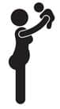

Kocaman popon, şişmiş suratın, sarkan göbeğin ve süt akıtan göğüslerinle çok çekicisin bebeğim…
Hadi amaaa, hiçbir hamile ve lohusa kadın kendini güzel hissetmez. Kendini suçlama, senin elinde olan bir şey değildi o kadar kilo almak. Az yiyebilirdin, diyecekler.Hayır yiyemezdin. Dikkat edebilirdin, diyecekler. Hayır edemezdin. Kolaysa kendileri hamile kalsın. Dikkat et, daha önce çocuk doğurmuş hiçbir kadın sana az ye demez. İçinde nasıl bir yeme isteği var, bilir. Ve sonra şişersin işte. Karnın şişer, kalçaların şişer, kolların genişler, bacakların saçmalar ve ayakların şişer. Sonra yüzün arı sokmuş gibi olur. Yüzünün yarısını kaplayan kocaman bir burnun olur. Bebek gidince kiloların da gideceğini sanırsın, inanırsın. Sonra bebek çıkar bedeninden, kilolar kalır. Bebek görmeye gelenler “Aaaaa bi tane daha mı var yoksa karnında?” derler sırıtarak. Dehşete düşüren bu espri karşısında, hakkını verir dehşete düşersin.
57 kiloydum. Sadece 57 kilo. Mağazaya gider, her kıyafetin 36 bedenini alır, kabine girer ve fermuarı çekerdim. Sonra hamile kaldım. Zannettim ki filmlerdeki hamile kadınlar gibi olacağım. İncecik beden, kocaman göbek.
Sonra kış geldi. Üşütmeyeyim diye fanila almaya gittim.Kaç beden dedi kadın. Yani normalde small giyiyorum ama siz bana medium verin, hamileyim dedim. Ben size XL vereyim, dedi kız. Yok deve, dedim içimden, ama dışımdan nazikçe teşekkür edip medium aldım ve çıktım.
Sonra ilk ay 6 kilo aldım. Sonra 6, sonra 8… Sonra 10… Ne olduğunu anlamadım. Yedim. Her şeyi yedim. Lahana turşusu gördüm manavda. Bir bidon lahana turşusu aldım. Bidonun kapağını açamadım. Lavabonun içine koydum bidonu. Kesmeye çalıştım bıçakla. Bir yerinden bir delik açabilirsem turşuya bir şekilde ulaşırım sandım. Beceremedim. Açılan küçücük delikten foşur foşur turşu suları fışkırmaya başladı. Mutfağa oturup ağladım. Sonra kapı çaldı, apartman görevlisi sipariş için gelmiş. Kapıyı üstüm ıslak, gözlerimde yaş, elimde bir bıçak ve turşu kokusuyla açtım. Ben açarım bidonu dedi, girdi ve açtı. Sonra sakinleştim, yedim, yedim, yedim. Sonra lahana turşusunun üstüne baklava yedim. Ve XXL fanila giydim, hem de erkek bedeninden.
40 kilo aldım. En son tartıldığımda 96 kiloydum. Ve doğuma daha bir ay vardı. Sonra tartılmadım, dahasını ruhum kaldırmadı. Kadına benzemeyi geçiyorum, insana bile benzetemiyordum kendimi. Saçlarım uzadı, sakallarım çıktı. Kardeşim bana abla yerine abi demeye başladı. Hormonlar dedim. Bir yerde okumuştum, hormonlar yapıyor bunu, dedim. Hamile bir kadın normal bir kadının üç yılda salgıladığı hormonu bir günde salgılıyormuş, o yüzden dedim. Hormonların üstüne attım. Sonra doğdular. Karnımın içinde tuhaf bir boşluk oldu ve bedenimden sadece 10 kilo gitti. Geriye iki bebek ve 30 kilo kaldı.
Bebekler 1 aylıkken markete gittim. Pasta reyonunun önünde gelen misafirlere ikram etmek için kurabiye bakıyordum. Reyon görevlisi bir kurabiye uzattı. Al kızım dedi, hamilesin canın çeker. Kadının kafasını kopartmak istedim. Almadım kurabiye falan, hâlâ almıyorum oradan. Küstüm.
Sonra bir şeyler olmaya başladı. Sanki her hafta bir kilo gidiyordu vücudumdan. Sadece çocuklardan birini kanguru ile göğsüme asıp birkaç saat yürüdüm dışarda. Sonra yavaş yavaş eridi kilolar. Dedikleri doğruymuş dedim, 9 ayda alınan kilolar 9 ayda veriliyormuş gerçekten.
Çocuklar 6 aylık olduklarında 6 kilo fazlam vardı. Eh dedim, ikiz doğum yaptım o kadar olsun… Ve takkkk! Name’ye hamile kaldım. Şimdi dedim, yandın kızım, gene kilo alacaksın ve bunu asla veremeyeceksin. Nitekim aldım. 75 kilo ile doğum yaptım. Doğumdan sonra eve geldim, tartıya çıktım, 75 kiloyum! Laaayyyynnnnn diye bağırdım, hata var!!!! Name 3 kilo doğdu, suyunu, tuzunu, gazını düş, bir 5 kilo olsun gitmez mi! Gitmedi. Nasıl oldu anlamadım. Çocuk doğdu gene 75 kiloyum.
9 ay bekledim, 9 ayda alınan kilolar 9 ayda verilir diye avundum. 9. ay bittiğinde kendime geldim. Az yemeye başladım, hareketlerimi artırdım ve o kiloların hepsini geri verdim.
96 kiloyu gördüm. Sonra 75’te seyrettim bir süre. Ve şu anda doğumlardan önceki kilomdayım. 57 kiloyum. Mağazaya gidiyor, 36 bedeni alıyor, kabine giriyor ve fermuarı çekiyorum! Ben fazladan aldığım 40 kiloyu veremeden, tekrar hamile kalmış biri olarak bunu başardıysam herkes başarır. Hadi git şimdi kendine bol kalorili bir şeyler söyle. Canını da .öt göbek için sıkma.